水利工程硕士
中共党员，中国海洋大学水利工程硕士（专业前6%，国家奖学金获得者）。具备扎实的海洋与港航工程背景，兼具顶尖的科研创新力与卓越的团队管理效能。
科研方面，以第一或主要作者身份在 Communications Engineering、Physics of Fluids 等顶级期刊及 ISOPE、OMAE 等国际顶会发表/录用学术论文6篇，获国家发明专利等3项，熟练掌握 STAR-CCM+、Python、MATLAB 等专业工具，具备全英文学术交流与报告撰写能力。
组织管理方面，曾任校级学生主席，具备极强的跨部门统筹协同、新媒体矩阵运营及公文写作能力，曾主导多项国家级/省级创新创业项目并斩获互联网+省银奖。生活中热爱运动，具备极强的抗压韧性与乐观饱满的工作热情；转速高、富有高自驱力与多线程任务闭环执行力，兼具严谨的工程逻辑与出色的综合协调能力。
学术旅程
中国海洋大学（985）
水利工程 · 硕士
集美大学（省双一流）
港口航道与海岸工程 · 本科
成长历程
工程实践
工程部技术员
中交第三航务工程局有限公司厦门分公司
- 合规监督：负责浙江大件码头沉箱工程指定环节现场技术监督，对照设计图纸与行业规范开展日常巡检，及时上报施工不规范问题，跟进整改复核全流程闭环，保障负责环节零施工违规。
- 文档管理：配合项目技术组完成技术交底辅助工作，对接现场班组与技术组做好信息同步；负责施工台账的日常记录、核对与归档，保障施工资料完整规范、流程可追溯。
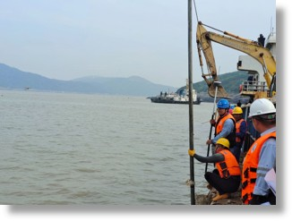
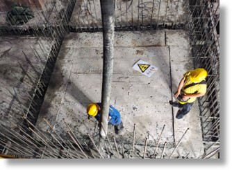
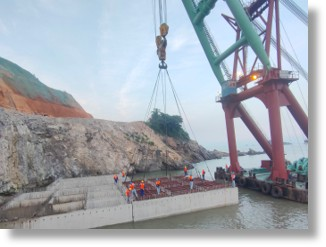
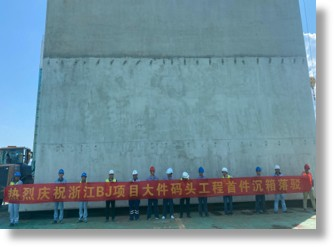
学生工作
院级及专业支部党建助理
集美大学港口与海岸工程学院
- 双线管理院级与支部党建工作，组织 6 场主题党日教育活动（覆盖 320 人次）。
- 规范执行党员发展全流程，完成 120 名积极分子的培训考察与 32 名党员的接收工作。
学生主席
集美大学校学生教学信息中心
- 全面统筹教务信息中心日常运营，高效管理覆盖全校16个学院的学生信息员团队，成功落地20+场教务会议与活动。
- 主导搭建「收集-反馈-改进」的教学信息闭环，开展3次大规模调研（全校），推动100+条合理化建议转化为实际改进举措，并产出3份高质量分析报告，有效打通3个核心部门的业务协同，显著提升教学运转效率。
宣传部部长
集美大学教务处公众号
- 担任校教务处公众号首届学生负责人，负责公众号的视觉与内容体系改革；建立「月度教学简报」的标准化推文模板，运用海报设计与专业排版，成功将复杂的教务信息转化为高可读性的新媒体内容。
- 核心统筹并落地执行7场校级大型「人文素养大讲堂」活动；负责官方宣发与内容沉淀，独立撰写3篇高质量讲座新闻稿，累计实现1.1w+的阅读曝光量，有效扩大了活动的校内知名度与影响力。
学习委员
集美大学港工2012
- 跟进全班28名同学的学习安排与进度，搭建高效反馈专线降低沟通成本。实施精准的学情优化跟进后，班级核心课程及格率提升至86%，累计10人次获得校级以上奖学金，班级整体学业水平始终保持领先地位。
团支书
集美大学港工2012
- 累计策划组织12场主题团日活动，高效完成9名入党积极分子推优与培养工作，带动班级60%的同学积极向党组织靠拢。
- 有效提升了班级凝聚力与思想建设水平，最终带领班级在16个参评支部中脱颖而出，斩获校级「五四红旗团支部」称号。
科创实践
溯海行舟
2021.10 — 2023.06基于清洁能源的海洋微塑料自动收集三体船
- 主导三体船动力与收集装置设计，利用 STAR-CCM+ 进行 CFD 数值模拟，优化水泵引流效率与船体阻力性能。
- 主笔撰写项目申报书，成功获得校级「挑战杯」大学生课外学术科技作品三等奖。
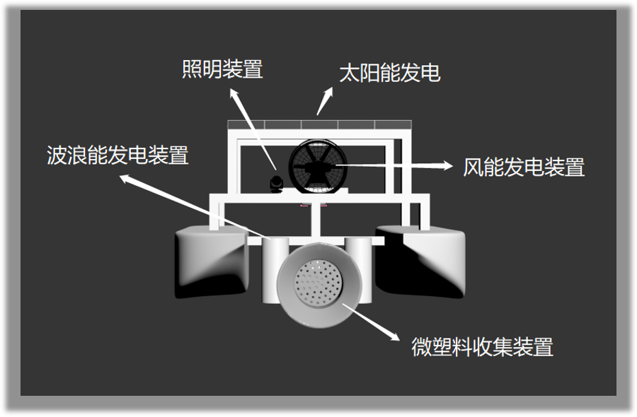
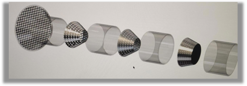
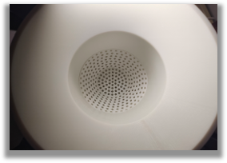
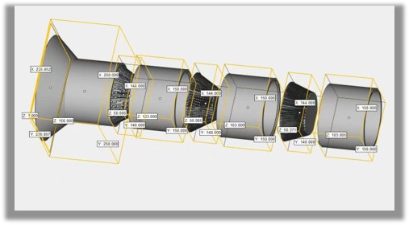
精卫听音
2022.03 — 2022.07海洋建设水下噪音监测预警先行者
- 利用 Python 对水下声学信号进行降噪与频谱分析，参与构建噪声预警阈值模型，支撑海洋生态评估。
- 负责调研国内外海洋噪声法规标准，进行技术可行性调研，独立完成项目中期报告。
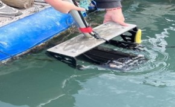
学术成果
专利成果 · 3 项
论文发表 · 6 篇
Communications Engineering (Nature), 2025, 4(1): 68
Gao S.J., Chen X., Pan Z.W., Tian Z., Liu F.
第二作者
Physics of Fluids, 2025, 37(8): 087117 (中科院2区, IF=4.3)
Gao S.J., Pan Z.W., Chen X., Tian Z., Liu F.
第三作者
Numerical Simulation Study of Slamming Loads on Trimaran Vessels at Different Entry Speeds and Angles
OMAE 2026, Tokyo, Japan, June 2026
第一作者
ISOPE 2025, Seoul, Korea, June 2025
第一作者
深海采矿船阶梯型月池砰击效应的数值研究
第十届全国船舶与海洋工程 CFD 会议, 南京, 2025
第一作者
ISOPE 2025, Seoul, Korea, June 2025
第二作者
专业能力
工程仿真
编程与数据
语言能力
通用技能
荣誉奖励
奖学金
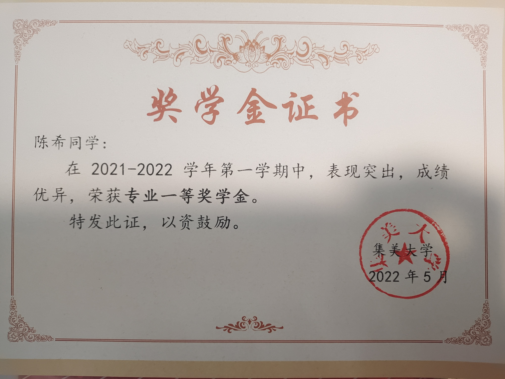

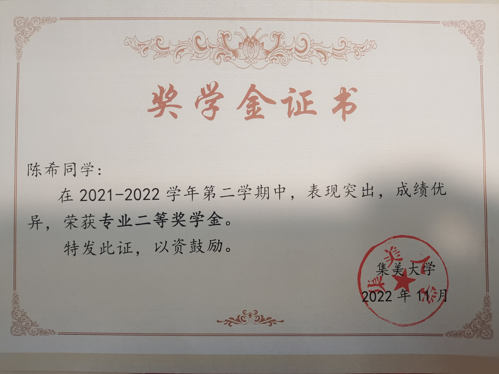
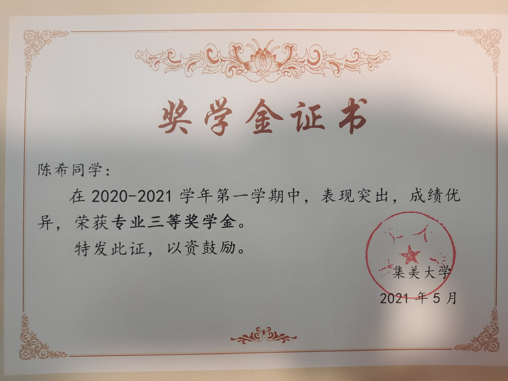
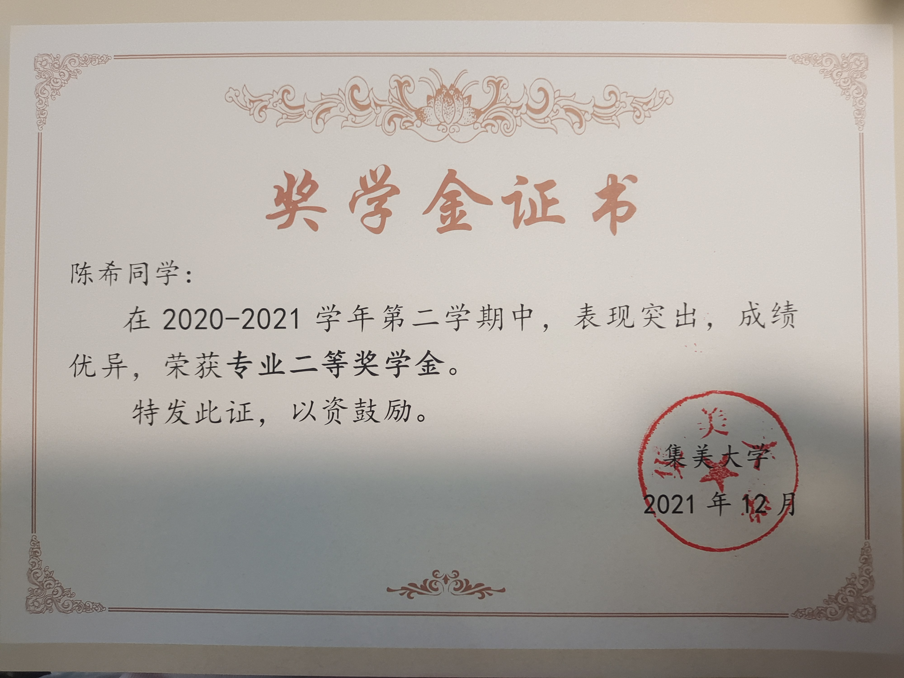
竞赛奖项
评优表彰
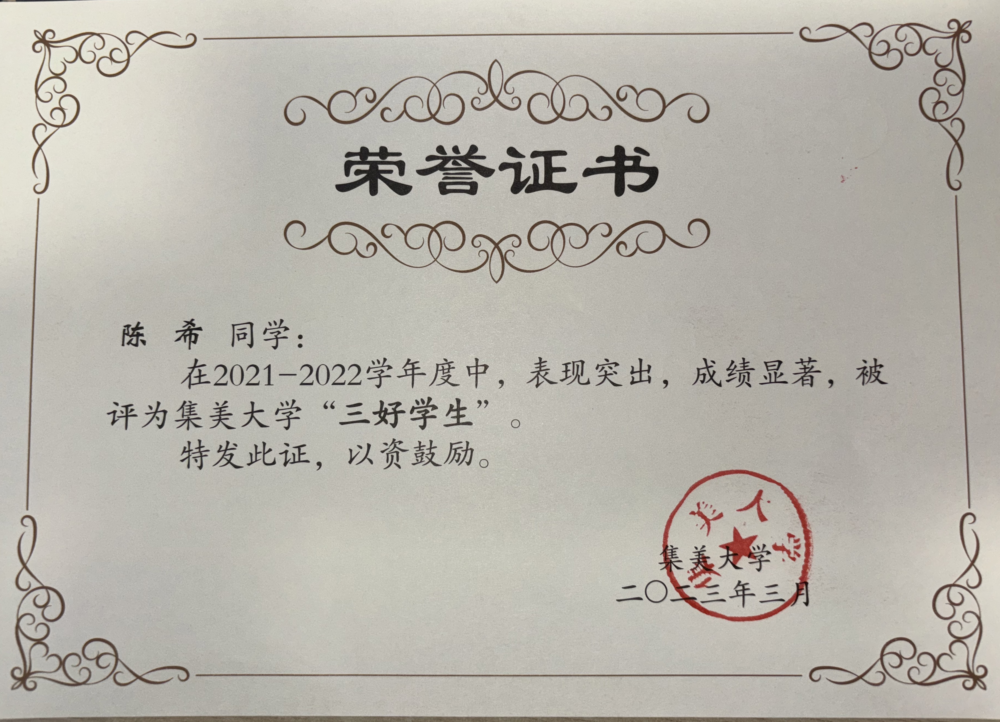
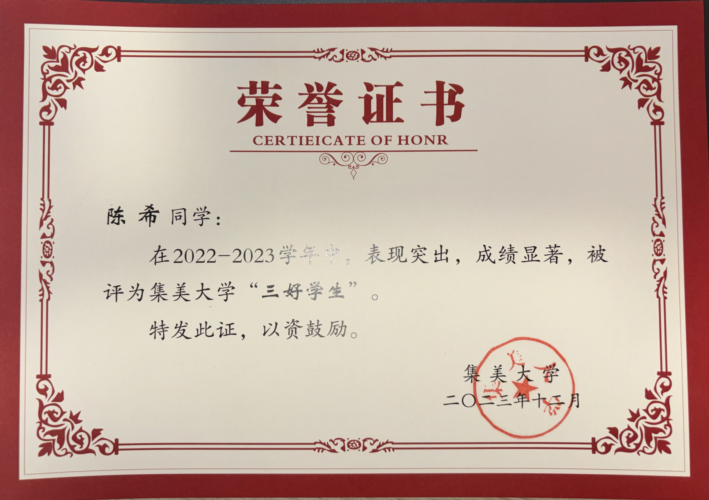
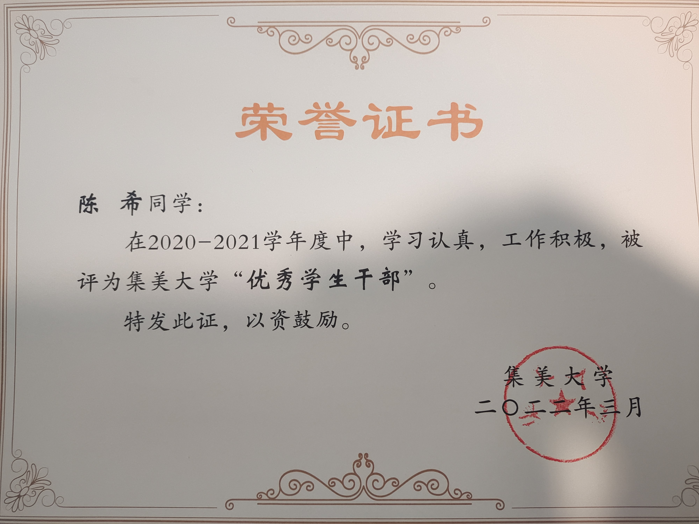


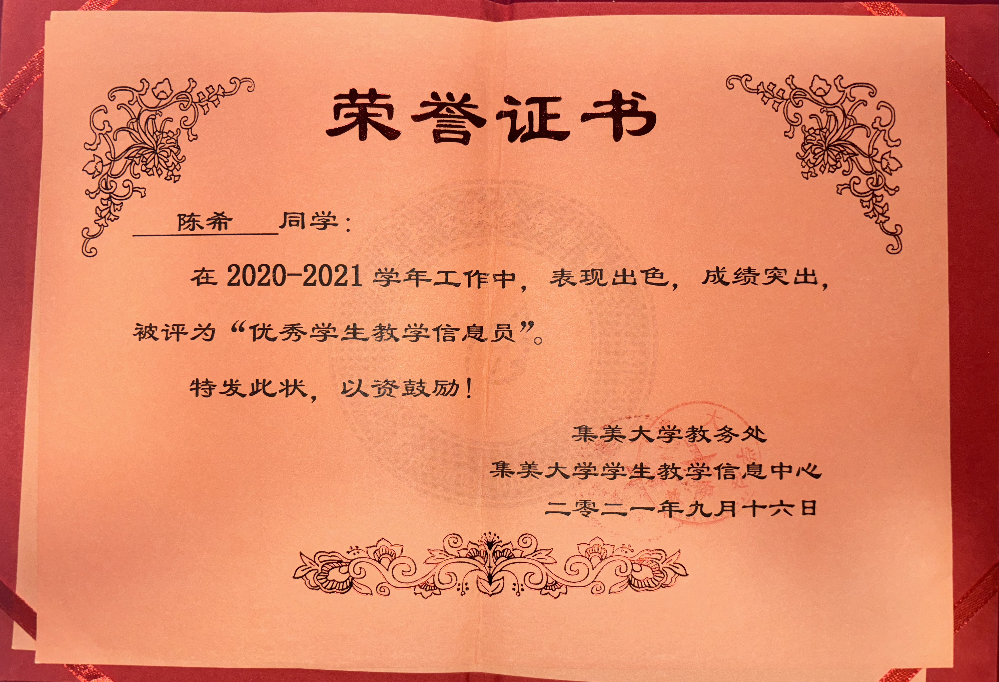
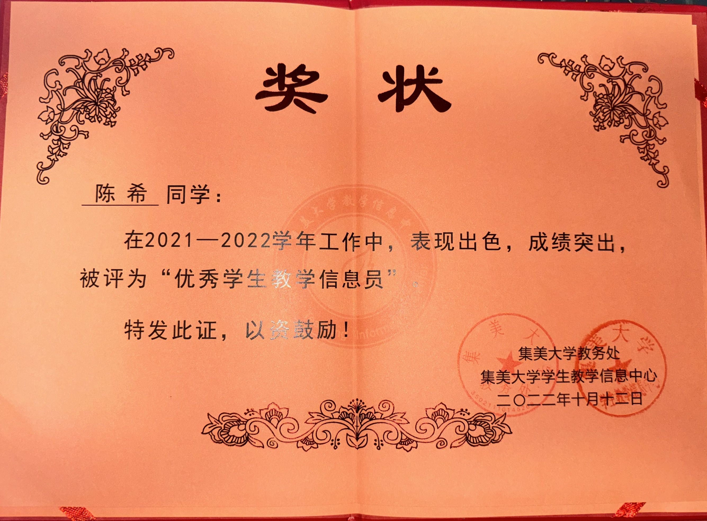
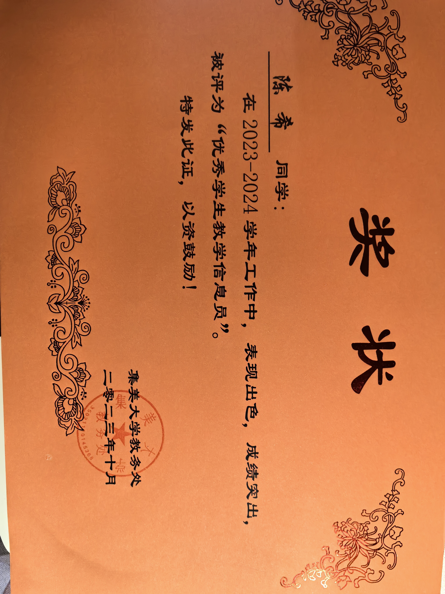